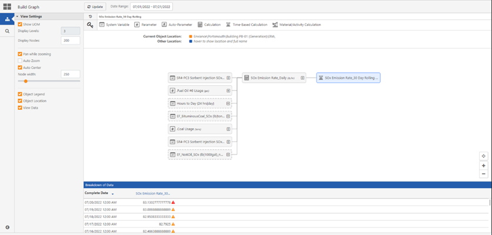

Under View Settings, click the View Data Checkbox.

Once the checkmark in front of View data displays, the Breakdown of Data section appears.
This section will be blank before any requirement is selected.
On the header of the Calc Graph Visualizer window, click the Date Range icon.
The Data Range selector allows users to observe the history of calculations, and any changes in formulas within the selected date range.

Click Apply.
The date range updates, and the Date Range window closes.
Click the requirement of interest.
The Breakdown of Data section displays with data points.

Data in the Breakdown of Data section by default is displayed in descending date order, you can click the date column for the order to be changed to ascending order.
To export the Data for a requirement, click the Export Data icon in the Breakdown of Data section.